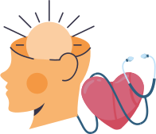

>>
X
>>
X
PROPUESTAS

SALUD
Este equipo entiende la salud como un servicio que debe contar con 5 características básicas: integral, eficiente, equitativo, de calidad y comunitario, tanto en la atención de pacientes con cobertura, como en aquellos que no la tienen, para eso pensamos en las siguientes propuestas
 Reorganización del organigrama y labores en el Hospital Municipal: Quedando de esta forma establecidos distintos Departamentos con su respectivo coordinador (Departamento de enfermería, de maestranza, etc).
Reorganización del organigrama y labores en el Hospital Municipal: Quedando de esta forma establecidos distintos Departamentos con su respectivo coordinador (Departamento de enfermería, de maestranza, etc).- Incorporación del Hospital Municipal al sistema S.A.M.O: Sistema de atención médica organizada a través del cual se logra una vinculación entre el PACIENTE, el ENTE COBERTOR (Obras sociales, prepagas, seguros, ART, etc.) y el HOSPITAL.
Como beneficio de esta vinculación logramos una atención médica, eficiente y de calidad, del PACIENTE, con o sin obra social, generar ingresos con la atención de los pacientes con cobertura y formar un fondo total de esos ingresos para libre disponibilidad y uso de las necesidades hospitalarias locales.
A través de este sistema se factura al ente cobertor las prestaciones brindadas a los pacientes que cuentan con cobertura médica, ingresando al Hospital el pago de los gastos que generó la atención de sus afiliados.
De esta forma ingresan recursos genuinos a nuestro Hospital, los cuales generan un total a distribuir de la siguiente manera: un 90% a un fondo de libre disponibilidad municipal para atender a gastos de funcionamiento, inversiones menores de capital y reparación o mantenimiento de estructuras hospitalarias, como también podría destinarse un porcentaje a generar una bonificación y/o incentivo para los agentes de salud y un 10% pasa a formar parte del Fondo Provincial de Salud.
Incorporación del programa OLA en el Hospital Municipal, es una obligación de cobertura por la cual las aseguradoras tienen el deber de cubrir los gastos sanatoriales y de sepelio que se deben afrontar producto de un accidente de tránsito sin necesidad de tener probada la responsabilidad de su asegurado. La OLA cubre a todas las personas (los terceros ocupantes del/los vehículo/s y/o peatones) que resulten víctimas de un accidente de tránsito en el territorio nacional.Convenio de cooperación sanitaria: Con el fin de tender redes sanitarias y en pos de poder derivar, cuando la situación así lo amerite, a nuestros pacientes a un centro de mayor complejidad, comenzamos con la gestión de un convenio con el Hospital René Favaloro de Santa Rosa, logrando un intercambio por el cual nuestros pacientes puedan ser derivados a dicho Nosocomio y nuestro Hospital reciba pacientes de las localidades aledañas, pertenecientes a La Pampa, que requieran atención en especialidades médicas.Creación del Departamento de Salud Mental: que realice acciones de promoción, prevención, asistencia y rehabilitación en salud mental de todas aquellas personas con padecimiento psíquico. Estas acciones estarán enmarcadas en la Ley Nacional de Salud Mental Nº 26657.Incorporación de nuevos profesionales y/o técnicos al Departamento de Salud Mental, además del personal idóneo con el que ya se cuenta (psicología, psiquiatría, psicopedagogía, terapista ocupacional) sumar a este área acompañantes terapéuticos, como así también una fonoaudióloga.Espacio de fortalecimiento mutuo: Este espacio dentro del servicio de Salud Mental tendrá como función directriz sostener y propiciar el bienestar del personal de salud, brindando espacios y dispositivos que apunten al fortalecimiento del personal debido a los elevados niveles de exigencias y estrés que este tipo de trabajo implica. Teniendo como objetivo acompañar y cuidar al personal, que tiene como misión básica el cuidado y atención de los demás usuarios del servicio.Revinculación del Servicio de Salud Mental con otros actores sociales: La propuesta es lograrlo a través de la comunicación directa entre el coordinador del área y la institución u organismo pertinente (Servicio Local, Educación, Poder Judicial, etc).Salud censada: Desarrollar un sistema estadístico informático de relevamiento sanitario en la localidad de De Bary, Bocayuva y Pellegrini (desde afecciones crónicas y/o agudas) que permita visibilizar las prioridades en este sentido, permitiendo planificar acciones preventivas.Salud comunitaria: Propuesta pensada como hospital puertas afuera, logrando que la salud llegue a la gente y no esperar que siempre sea al revés, generando una tarea preventiva desde las distintas áreas para anticiparnos a la aparición de problemáticas que afecten la salud de nuestra población en la localidad de Bocayuva, De Bary y Pellegrini.Instalación y puesta en marcha del CPA: Centro de Prevención y asistencia de adicciones, dispositivo interdisciplinario especializado en problemáticas de consumo, atendiendo de forma gratuita y pública a personas desde 14 años en adelante, que presenten abuso en el consumo de sustancias psicoactivas (consumo problemático) o dependencia (leve o moderada). Este centro efectúa abordajes de prevención y promoción de la salud, realiza tratamientos individuales, familiares y grupales; Por otro lado trabaja en la rehabilitación, en la inclusión social, en actividades comunitarias y en la reducción de daños, buscando, posibilitar una mejor calidad de vida.Programa boca sana: Promoción de la salud, educación bucodental y enseñanza técnica de cepillado; Concientizar sobre hábitos saludables y sobre salud bucodental de la mujer embarazada; Prevención, examen y diagnóstico, específicamente en niños y niñas; Diagnóstico precoz de lesiones precancerosas y de cáncer bucal.Area
Gracias a que nos dejaste conocer tu realidad, y las dificultades que existen en el distrito para solucionar las diferentes problemáticas habitacionales, este equipo pensó en nuevas y variadas alternativas para vos.
- Garantizar el acceso a las viviendas con los servicios basicos pre instalados.
- Censo PELLEGRINI 2024: Primer censo desarrollado por y para el distrito, recabando la mayor cantidad y calidad de información. Teniendo real conocimiento de la situación habitacional de cada familia, desarrollar diferentes programas que den respuesta a las diferentes problematicas habitacionales.
- Programa “Termina tu casa”: programa pensado en el acompañamiento tecnico y economico para culminar las viviendas con mas de 50% de avance de obra, y cumplir el sueño de la casa propia.
- Programa “Refacciona tu casa”: Programa desarrollado para dar solución a aquellas personas que desean ampliar/refaccionar su hogar.
- Programa “Revivir Hogar”: El programa consistiría en un relevamiento de cada uno de los hogares deshabitados de nuestro distrito para dar con sus titulares y celebrar un convenio de refacción y uso por parte del municipio por un tiempo definido, para luego volver al uso al dueño original.
- Programa “SOS Vivienda”: Articular con los estudiantes/egresados de la escuela profesional para que realicen sus practicas (pagas) en los hogares con mayores necesidades en el distrito, dando así respuesta a situaciones habitaciones criticas.
- Transparentar la inscripción y sorteo de viviendas.
- Convenio con gremios/sindicatos. Desarrollar convenios con los diferentes gremios del distrito para que estos puedan acercar la posibilidad de la casa propia a sus afiliados.
- Regularización y saneamiento de títulos inmobiliarios para que todos tengan acceso a su escritura.
- Programa “Estar a mano”: Bolsa municipal de materiales donde se facilitaría el acceso a determinados materiales, donde el beneficiario se compromete a devolver los mismos en determinado tiempo para que con ello se retroalimente esta bolsa y el beneficiario sea otro vecino.
Ampliar la gestión ante Provincia a 100 casas en total,en Bocayuva, De Bary y Pellegrini; generando nuevos loteos, para nuevos programas.SALUD
Frase
Titulo DetalleEQUIPO


 Pellegrini
Pellegrini
Candidato a Intendente
Bruno Buyatti
Concejales Titulares
- Facundo Fernández
- Evelyn Tomasello
- Marco Antonio Génova
- Evangelina Mulan
- Carlos Andrés Enrique
Concejales Suplentes
- Joana Fernández
- Agustin Bustillo
- Romina Duro
Consejeros Escolares Titulares
- Marco Antonio Elorga
- Maria Isabel Macharelli
Concejales Suplentes
- Valentin Vescovi
- Natalia Martínez